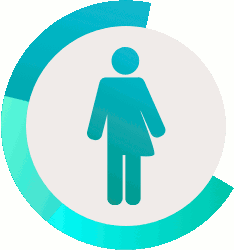

Nice to meet you!
I'm a hands-on UX designer who advocates for users, diversity, nature and video games that challenge industry clichés. I have a strong background in psychology and human factors because I care about people, users or other. 7 years as user researcher and UX designer taught me that I am a constant work in progress: the more I learn, the more I realise all there is to learn. I like to keep an open mindset and explore new topics.

What I do
- Build a step by step UX strategy using a full spectrum of methods
- Achieve business goals by identifying and addressing user needs
- Craft efficient design solutions in collaboration with other specialists
How I do it
- Observe users to understand and transform behaviors
- Quickly test ideas to build on the best
- Confront expectations with actual experiences
- Iterate from paper prototypes to interactive wireframes (Axure)
What I believe in
- User experience is everyone’s job
- Experience depends on context, embrace it in the process
- There's always a way to inform decisions with data
- If it’s not tested, it’s not done
Challenges I can help you overcome
I have helped over 120 international clients make 60 projects successful. Here's some case studies to illustrate how I keep my clients happy.


Tools I love
Pen and paper remain my favorite for early ideation. Platforms such as inVision or github make collaboration easier. I like dipping my hands in HTML, CSS and javasrcipt once in a while. I'm always trying out new tools, and I teach the tools I know best.
Hold you mouse over icons to show tooltips if you don't recognize the logo.


I've helped them
and I loved every second of these collaborations.
Axelle Robet, Client director | Smile Read moreCornelia turns UX into a game for the clients and the projects into a success.
Ashinsa Cavalie - Senior Project manager | PSA Read moreCornelia was attentive to comments from the stakeholders and good at explaining her recommendations.
Cyrille Assire, Senior Director | af83 Read moreCornelia is an excellent and complete User eXperience professional with deep skills.
Sophie Brossard - Production manager | Smile Read moreShe set the bar high in a humble and inspiring way.
Eric Drier de la Forte - Project Manager | Overkiz Read moreCornelia is able to start from a wide complicated needs and build a strategy to guide our client.
Baptiste Roullin - HCI consultant | Sopra Steria Read moreWith her deep-rooted care for people, I hold her for one of the finest minds of the Paris design scene.
Sebastien Rigouste - Creation director | Smile Digital Read moreShe was always on board to help someone or giving an advice to everyone asking.
Adrien Chassagnac - UX designer | Razorfish Read moreCornelia lead me to develop skills and get deeply involved in the projects.
Victoire Douwes - UX Designer | Smile Read moreShe never hesitated to question her management to optimize it. I highly recommend Cornelia.
Charlotte Pellefigue - UX Designer | Freelance Read moreI have seen many client ask for cornelia to do a project with her again. Definitely funny and endearing.
Clémence Blanchet - Human Factors Consultant, UX Designer | Affordance Read moreCornelia will be an advantage to any team for her leadership and personal reflexion on the practice of ux.
Romain Rouyer - Creative Technologist | AF83 Read moreI particularly appreciate her research work and conferences, always relevant and highly revealing findings.
Cornelia is a very talented person. She is autonomous, pro-active and her knowledge about Games User Reseach is huge.Pierre Faucheux - Managing director | Play in Lab Read more
How can I help you?
If you're looking for a practical problem solver, a resourceful entrepreneur or someone who can collect complex needs and engage the whole company in creating efficient designs ? drop me a line!
- Do you want to set high standards on your UX culture ?
- Are you a company with a strong moral compas and appetite for meaningful innovation?
- Do you strive to improve people's lives, work conditions, preserve the environment or promote diversity and education?
I'd love to discuss how we can make your projects a success together.
Students, peers and professionals, let's meet up in Vancouver for some coffee or during meetups such as UX Prototyping, Information architecture and content strategy, Ladies that UX, or come to one of my Axure trainings